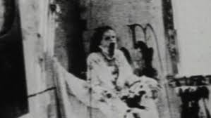

In the early 1900’s, a man known as Dr. Michael Schneider acquired Clifton Manor, a mansion located on approximately 40 acres of land in Adelaide, Australia. He quickly moved his wife and two daughters in and for a while, everything was happy.
The doctor had a cabin on his land, that he used to treat patients. Rumor had it, most of his patients were schizophrenic or mentally ill. He treated them there to keep them away from his family. After five happy years, his wife, Ethyl and his two daughters all died, due to an unexpected accident. The doctor went mad, and his cabin became a place of torture where he would regularly work through his grief. Dr. Schneider began performing surgeries, without any form of anesthesia. Neighbors reported hearing tortured screams coming from his property. Rumors began to spread that the good doctor was killing and dismembering his patients as a form of satanic ritual. Agonized cries could be hear for miles around, but no investigation was conducted – that is, until the doctor had already died.Police found the doctor in his home, the limbs and bodies of his dead family with him. The picture below was taken by police in the house where they found Dr Schneider, and is believed to be Ethel Schneider. MrsSchneider Now, the whole area, in particular a tree-lined trail, is haunted by the ghost of Dr. Schneider, and his unsuspecting victims. You can explore Schneider’s Alley, now known as Andrew’s Walk. But beware, there have been more than 100 unconfirmed ghost sightings.